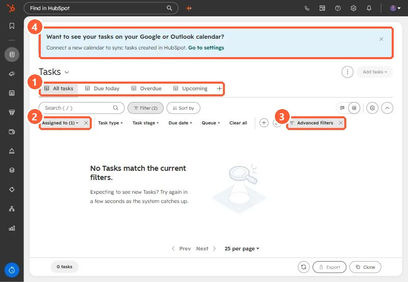

Short answer
HubSpot says all default task views include Assignee: Me, so you only see your own tasks. On the tasks page the Filter button shows the quick filters: Assigned to, Task type, Task stage, Due date, and Queue, plus Advanced filters. Change Assigned to, or clear it, to see others' tasks. The default views are All, Completed, Due today, Overdue, and Upcoming. A banner offers syncing tasks to Google or Outlook calendar.
1. The tasks page
Open Tasks. Mine shows 0 tasks with Filter (2) applied.


2. Why it is empty
- All standard views include Assignee: Me. Views other than Completed also only show uncompleted tasks.
- Assigned to (1) is the filter to change. Clear all removes the quick filters.
- Queue filters to a task queue, if your team uses them.
3. Make it stick
Save a team view with the filters you want. See saved views and filters. For tasks created by automation, see the Create task workflow action.